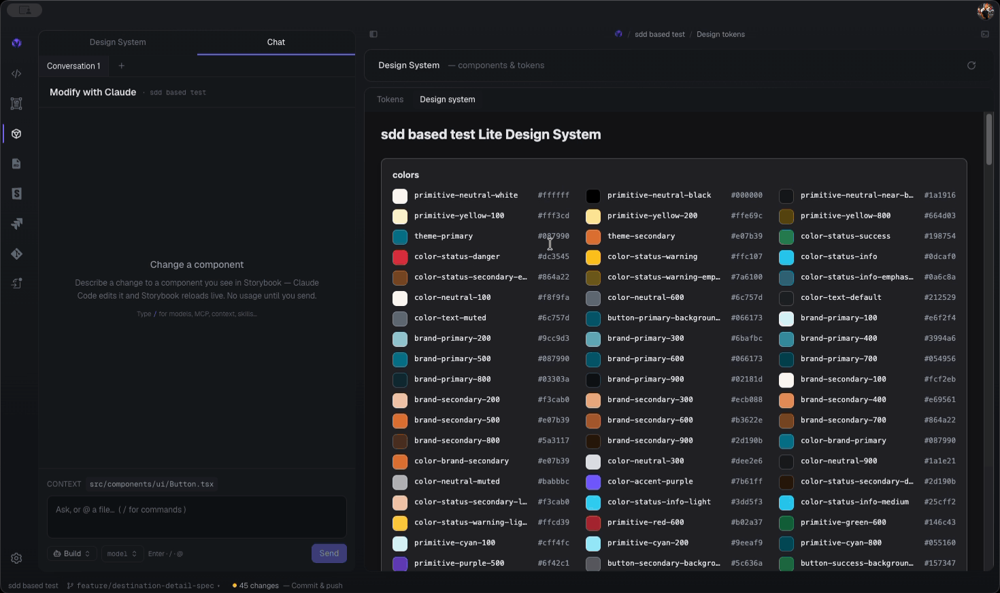
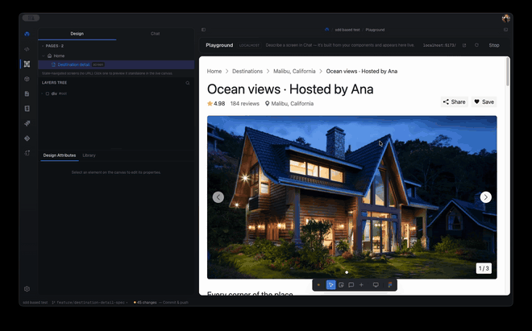
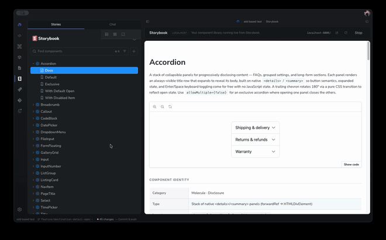
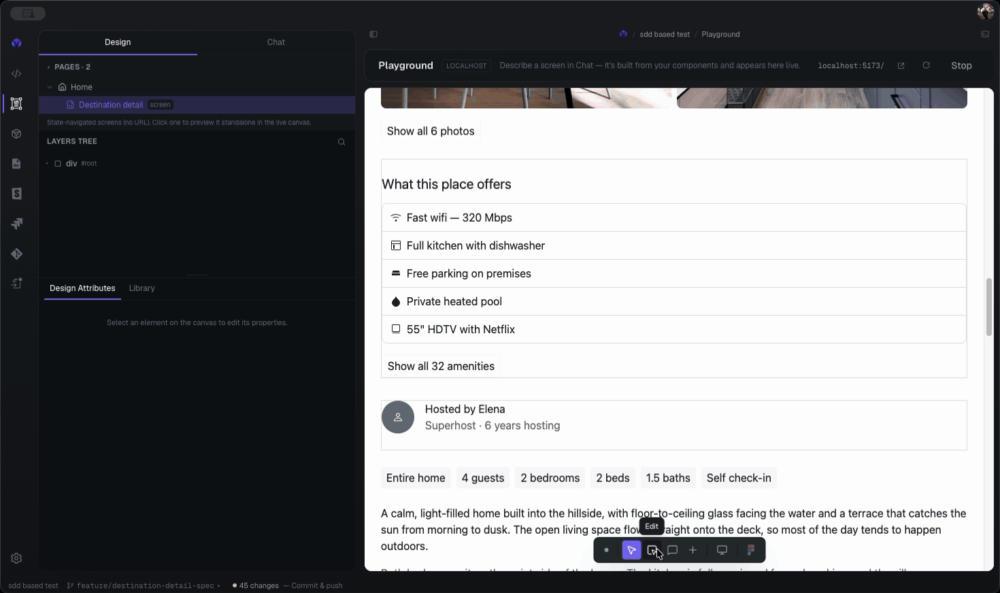

AI orchestration for design-to-code
Turn design into production-ready code — on your own local Claude Code.
A lean per-architecture macOS build — pick yours:
Download the IDE
The whole SDD-DE cycle, as clear screens
Every step of the methodology becomes a screen with status. VortSpec makes the terminal invisible without hiding what the agent does.
Design System workspace
Extract tokens and detect components from Figma, a ZIP, or a repo — then build one component or all at once, and keep adding. It's a living workspace, never a finished checklist.
Live Storybook Playground
VortSpec stands up a real Storybook for your components and embeds it — docs, interactive controls, and every variant. Ask the built-in assistant to change a component and watch it reload live.
Design token Inspector
Browse every token grouped by type with swatches and mono values, see where each is used, and reconcile against your authoritative Figma variables — flagging drift.
Design manifest (DESIGN.md)
Generate the AI hand-off file — tokens, component contracts, and conventions in one place — so any coding agent can build on-brand screens without re-deriving your system.
Spec-first gates
Briefs, specs, and the manifest are readable, approvable documents. Nothing advances to code without your explicit approval — the app enforces the gates the CLI could only recommend.
Transparent runs
Watch live agent progress — tool calls, file edits, completion — as friendly activity, with the raw stream-json terminal always one click away. A lens, not a cage.


A VS Code–style workspace with Claude Code built in
A full code cockpit for your project — editor, terminal, and live preview — with an assistant that has the Claude Code extension's whole surface: it sees your files, runs tools, and can act on the IDE, always behind the spec-first gates.
Editor & Explorer
A Monaco editor with a file tree — create, rename, move, and delete files; drag tabs to reorder; and view Git diffs vs HEAD. An open-files count and the active file show in the status bar and breadcrumb.
Terminal & live preview
An integrated terminal running your login shell in the workspace, and a live preview pane beside the editor — the running app or Storybook, hot-reloading. Open it in the browser or copy the link.
Conversations with agents
Multiple chat tabs, each an independent Claude session with a pickable agent — Build, Review, Plan, YOLO, or one of your Claude Code subagents. Reference one conversation from another, or send a highlighted selection between them.
Bring in any context
@-mention a file or folder, drag files/folders in from Finder or the Explorer, paste a screenshot straight from the clipboard, or hit Open in Chat on an editor selection — all attached as context the assistant reads.
The full Claude Code surface
Type / for the command palette (/mcp, /model, /context, skills, agents…), see the model actually in use, and watch tool calls, reasoning, plans, and terminal output render inline — not as raw text.
Act on the IDE, gated
Ask the assistant to open a folder, clone a repository, or switch projects — every workspace-changing action asks for a one-click confirmation first. A model can advise and edit, but never silently swap your project.

From a design source to real components
Connect a design source
Point VortSpec at a Figma file, a ZIP export, or a repo. Claude Code reads it, extracts your design tokens, and detects every component — no brief needed.
Build & verify components
Generate one component or all of them in your framework using only the extracted tokens. Preview each live in Storybook and run visual + accessibility verification.
Hand off & publish
Approve the design manifest, then optionally publish to GitHub with your own git — ready to build on-brand screens for your product.

Your Claude. Your files. Your rules.
VortSpec is a cockpit, not a middleman. It configures, launches, observes, and gates Claude Code — it never re-implements the agent or takes over your account.
What's new
Recent releases.
- Fixes v0.1.35, which would not start — that build launched and never opened a window. Nothing in the app had changed: the build toolchain moved a piece of generated code out of scope, and the main process failed before the window existed. The app no longer depends on that generated line, the toolchain is pinned to exact versions, and the release check now launches the packaged app and refuses to ship it unless a window actually appears.
- VortSpec tells you when there's a new version — the start screen says so when one is available, with the release notes one click away. Nothing installs itself: you download the new version and install it, the same as before.
- Settings → Software update — see the version you're running and check on demand. “Couldn't reach GitHub” now reads differently from “you're up to date”, so an offline check is never mistaken for good news.
- The download matches your Mac — Apple Silicon and Intel each get their own build. Previously the link always pointed at the Apple Silicon one, which would not run on an Intel Mac.
- Everything from v0.1.35 — scoped style edits, canvas multi-select, the Library panel, screens bound to the design system, and the framework fixtures. Listed below; withdrawn there, shipping here.
This build did not open a window on macOS and has been withdrawn — a build-toolchain regression, not a change in the app. Its changes ship in v0.1.36 above — install that instead.
- Every style edit carries a blast radius — change a value and choose, on the same control, whether it applies to this element, everything that looks like it, every instance of the component, or the token itself. Each option states how many elements it will affect before you commit, so a wide change is never a surprise.
- Change one component without disturbing the others — a token is shared, so “restyle every Button” used to mean restyling every Card that read the same token. It is now written as that token redefined inside the component: Buttons follow, Cards keep their value, and the value stays a token rather than a hardcoded literal.
- Multi-select on the canvas — shift-click, marquee-drag, or select every element matching a named criterion. Edit them together: shared values are editable, differing ones read Mixed, and a property you never touched is never written.
- The Library answers “what is this made of?” — select anything and its applied styles are collected under its name, grouped by kind. Values your design system does not define are named rather than silently absent, with one click to adopt them.
- Screens bind to the design system again — composed pages were being styled with copies of token values, which looked right and followed nothing. They now reference the token with the value as a fallback, so a token edit reaches the page and the page still opens standalone.
- Framework support you can check — Vue, Astro, SvelteKit, Nuxt and vanilla each gained an executable fixture that compiles a real project and proves the check catches what it claims. They run in CI on every change, including a mutation sweep that proves each fixture can actually fail.
- A design system you can see — the abstract “Accent / Roundness / Shadow” levers are gone. In their place: your project’s own tokens, under their own names, grouped into Colors, Typography, Spacing, Borders and Shadows. Every attribute is drawn rather than spelled out — a colour is a swatch, a radius is a corner, a shadow is a lit square, a type token renders at its own size.
- See it before you apply it — a live sample card re-renders under a preset or a manual edit before you commit it, so you judge the result instead of the value.
- Themes — Ocean, Forest and Sunset ship as built-in presets with matched light and dark pairs; Default returns your library’s own values without discarding your edits.
- Fonts — ~70 Google families bundled, the rest fetched as you scroll, alongside your system and Figma-library fonts.
- Reads consumed libraries properly — token files that only
@importa vendor theme now resolve through the whole chain, so a real design system shows all of its tokens instead of none, and edits land in the file that actually declares them. - Shell — searchable layer tree, a dock that reopens from any section, animated sidebar collapse, and the brand mark folded into the breadcrumb.
- Seamless shell — one continuous gradient chrome; the sidebar and main area float as matching rounded “glass” panels, with a low-opacity gradient border that subtly follows the cursor like a reflection.
- Neutral dark-gray palette — the near-black surfaces are now a considered dark gray, not pure black.
- Unified, detached headers — every section’s header floats above the main container at one consistent height.
- Refreshed controls — buttons gain a subtle gradient + press feel and app-styled hover tooltips; the sidebar defaults to a quarter of the window and the Storybook nav fills the dock.
- Draw-to-component — sketch in a movable Draw window (Excalidraw) and compose a component from it, grounded in your light design system.
- Connect Enterprise Design System — a new intake that consumes an existing client design system (their Storybook, component library, tokens, and knowledge base) instead of rebuilding it: it embeds their Storybook, points at their real token source, and imports their real components.
- Token-fidelity sanitation — link → name → value → alias token resolution, with component-binding fidelity and an orphan push-plan.
- Playground light pages — pages you create or open now show automatically, and chat/AI edits hot-reload the canvas immediately.
- Video & media — hero video/image/font assets stream with range support; dropped media is copied into the page's assets instead of inlined, with a safety net so an oversized blob can't freeze the app. Plus guidance for WebGL/shader backgrounds.
- Bento design-system palette — colors full-width on top, the rest below.
- Manual Playground edits apply instantly and persist to real source — no Apply/Keep gate; the AI is reserved for language prompts.
- Desktop app ships the source-stamp bundle; the IDE ships ts-morph's full dependency closure (fixes a launch crash).
- Writes are confined to source files inside the project (path-traversal guard); every release is gated by a packaging smoke test.
- Text, style, color, tokens, variants, and delete write straight to source (no AI), with Cmd/Ctrl+Z undo/redo.
- Create variable — bind a design token to any field even when the project has none; VortSpec bootstraps the token file.
- Local-array list edits (reorder/delete
.map()rows) and deterministic drag-move for static elements.
- In-app terminal — open a real terminal docked at the bottom from any view; refreshed IDE top bar.
- Token usage counter now sees Tailwind v3 config-mapped and CVA-variant classes.
- /provision-library pulls a library's real components (shadcn/radix, MUI/Chakra) instead of rebuilding look-alikes.
Run spec-driven design-to-code today
Free and open. Bring your own Claude Code. The IDE ships as a lean per-architecture macOS build.